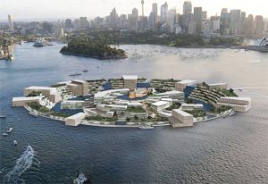

To follow on from a few of the previous posts I am re-reading with my coffee (first cup, so allow for that)...
A few thoughts on our ability to adopt and adapt new frameworks:
I think where Biomimicry and Systems Thinking will fall down is precisely where we try to use them as 'replacement' constructs for a manipulative engineering strategy in a similarly limited perspective to the tactics now failing us: in other words, incomplete integration.
We need to consider not only how to change our technologies and policies, but equally when a tech solution is appropriate versus when we need to rethink the larger presumptions.

Let's take an example from the early 2011 season of massive floods which have literally deluged every inhabited continent. Obviously rescue and relief come first, but the situation has also inspired a burst of creative responses from the planning and design side of things: floating houses (such as the work of Koen Olthuis and
Waterstudio in the Netherlands) , even floating communities and entire cities (such as this proposal for an
Embassy of the Drowned Nations) are predicted for the future.

I actually like the proposal for the Embassy, it's exactly the sort of poetic, startling and "creatively in-your-face" statement that can profoundly affect awareness. However, and more pragmatically for more continental communities, the flood response might equally include decisions NOT to rebuild, as has happened too infrequently, but there are communities which have responded by relocating. And that is a legitimate solution: change the problem by altering the need itself.
We need to learn from the integrative qualities of Permaculture, Biomimicry and Systems-Thinking as much as from their specific brilliance. We need to be open to their inspiration and models in a richly diversified cross-linkage of pretty much everything we do, and be open to the idea that various tipping points, pivots, opportunities for transformation and uptake may not necessarily be found in planning, engineering, or industrial design for instance; they may be cultural, personal/psychological, political....
The cultural (including attitudinal) aspects are so fundamental that we tend to be blind to them within our own circles and societies, only identifying them when they crop up as a barrier to cross-cultural communication.
The cultural (including attitudinal) aspects are so fundamental that we tend to be blind to them within our own circles and societies, only identifying them when they crop up as a barrier to cross-cultural communication. As participants in a highly technological society we tend to take an initial approach to nature and the built environment as 'overcoming' versus 'adapting'. I take comfort and strategic guidance from the knowledge that this too is a cultural attitude rather than something hardwired at the species level. Because attitudes can and do change.
How can I be so sure this is cultural? From many years of working with various Indigenous communities, in part as an intercultural translator and bridge-builder. In trying to separate the core distinctions which genuinely characterize Indigenous world views from those of industrialized societies, there is a short list which has more or less been agreed by many cultural groups. Key differences include that Indigenous perspective sees the world as alive rather than a set of commodities, it sees humanity in a respectful relationship to the others sharing our world, and the first and preferred response to situations which we would engineer is to adapt to rather than manipulate the system. They also tend to be more aware of, accepting and comfortable with time factors.
So the fact that there are other cultural perspectives which prefer adaptation over manipulation is encouraging. We don't have to think the ways we currently do. We have choice.
We are in the midst of paradigm change. It is messy. All truly creative process is messy. Biomimicry brings biologists to the design table. We also need expertise and perspective from many other disciplines and everyday experiences to be brought into the conversations, and not in a tokenistic "stakeholder consultation", but as authorities on their own understanding. Innovation is more than new ideas and new strategies; it is about new voices.
That's more than I thought I was going to say. I think I need another cup of coffee :)